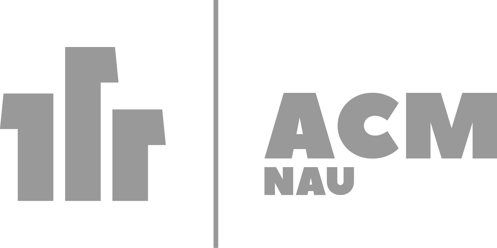
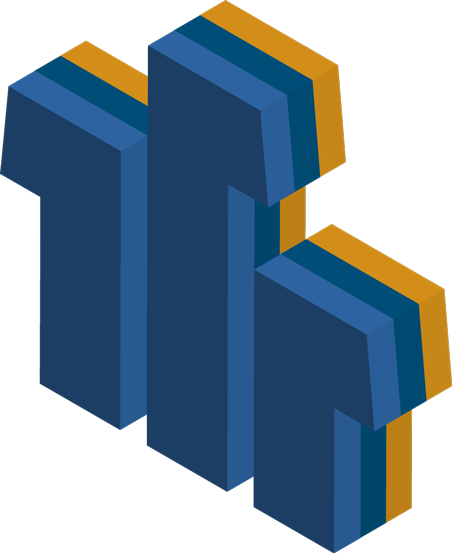

One And One And One Together:
Our Logo And What It Means
Universal Human Truth
As any computer aficionado knows, the binary language of 1's and 0's in their stark simplistic beauty, comprise the main language of computers and code to allow them to achieve all the wondrous things that they do. Our logo reflects this with the three 1's at the top, but it also reflects a more universal human truth: 1 and 1 and 1 shows we are all individuals, but put us together to form our own patterns and codes, and we can add up to something more as well.

How 1 Can Change Everything
Each 1 in code may look like the one before it, but without a single 1 or if it were moved to a different location, everything would change. This is true of our club, and we encourage you to come and be a part of it. Our vision that we hope our logo reflects is a place where individuals may come together to dream, to code, to learn, to make new friends, to have fun just sharing the magic of what computers are capable of and explore the opportunities in this very young but rapidly galloping advancing science.
Artificial Or Organic Intelligence – Does It Matter
We are excited about the possibility of artificial intelligence. Our logo represents the diversity of individuals coming together as singular entities but standing together to represent those same individuals uniting in their own code to grow and learn together. Artificial intelligence or organic intelligence; is it such a difference? Perhaps it is now, but we seek to discover what the boundaries and limits of that are, if indeed there are any limits to how far a computer's intelligence may go. Behind every computer is a group of dedicated people who poured their hearts, souls, minds and dreams into the creation of the code in that one day, like one wishes for a child, the computer will achieve something miraculous beyond even what its creators could have imagined. Dreamers and scientists come together here to form a brave new world, and we want to make this world a better one, use our abilities to create something phenomenal. Binary code is so deceptively simple seeming and yet the interaction and arrangement of every number is crucial to the outcome just as human are in their place.

Changing The Way The World Communicates
Computers offer a strange new wondrous world for all of us with amazing advances in technology and changing the very nature of communication itself. No longer you are bound by physical limitations in communication; for the first time, a true global community that can include even the average citizens with no money for extensive travel to be heard and reached one another, to truly see and experience the world through the eyes of one another. 1 and 1 and 1... this is our logo. We come together in a universal computer language with the goal of becoming something greater together...